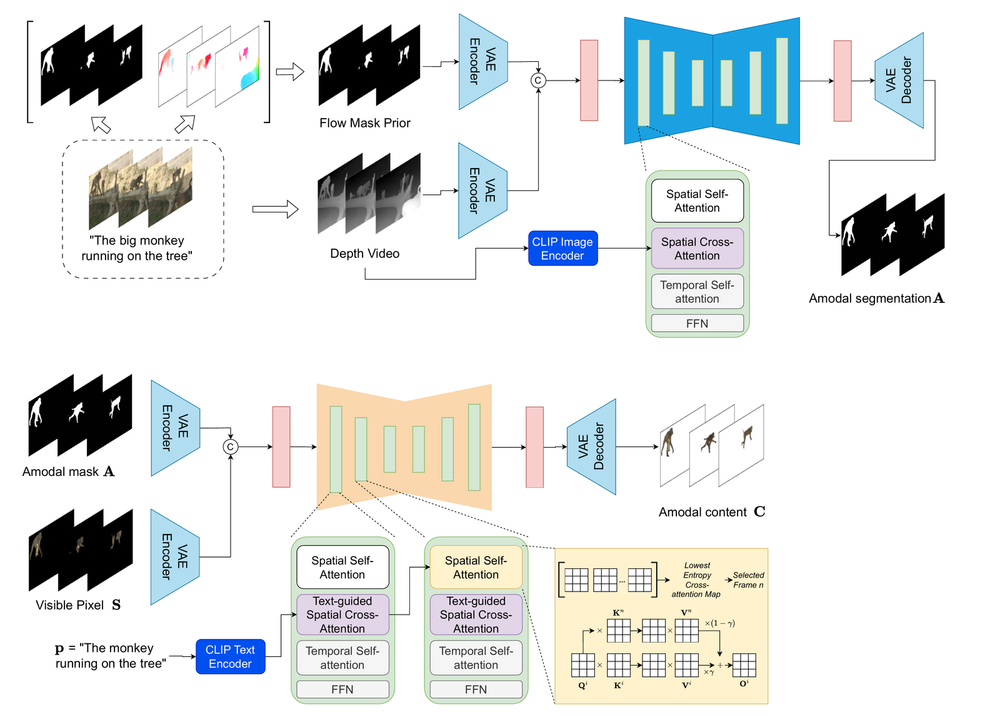
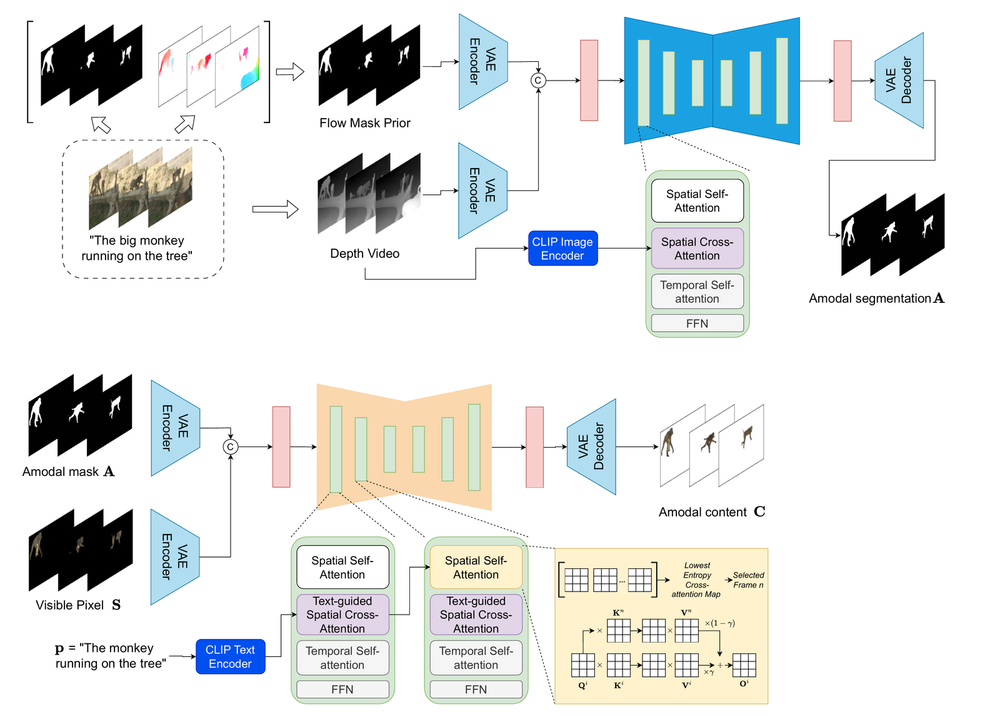
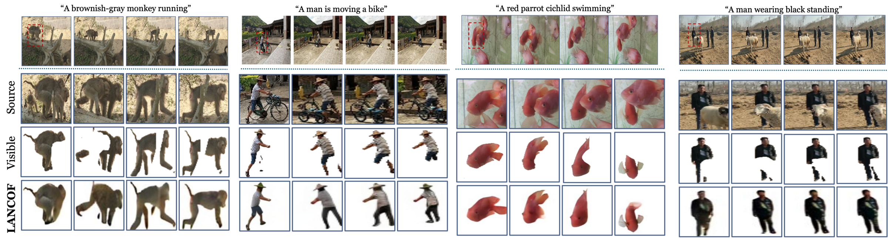
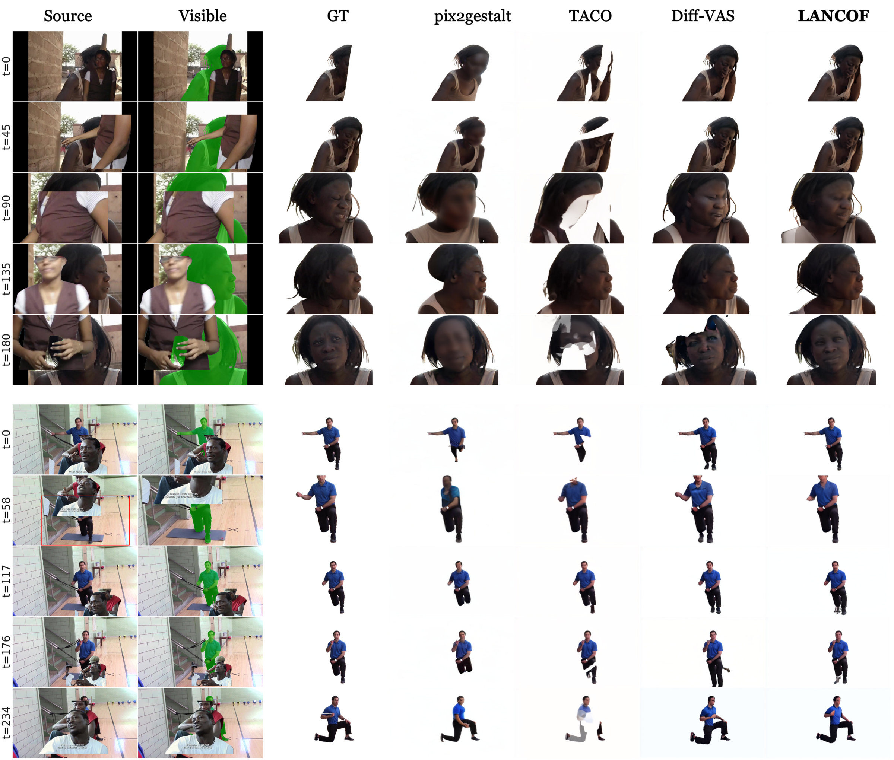
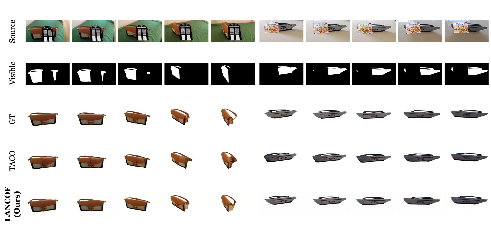

Method Overview
LANCOF performs (1) mask completion guided by optical flow and (2) appearance completion guided by text, with a zero-shot temporal generation pipeline for arbitrary video lengths.
Amodal perception enables humans to perceive entire objects even when parts are occluded, a remarkable cognitive skill that artificial intelligence struggles to replicate. Substantial advancements have been made in image amodal completion and are now being extended to the video domain thanks to rapid progress in diffusion models for visual synthesis. While recent advances in video amodal completion show promise, existing approaches suffer from two critical limitations: insufficient auxiliary information to guide recovery of heavily occluded content, and inability to handle videos of arbitrary length. We present LANCOF (Length-Agnostic Video Amodal Completion via Diffusion Model with Text and Optical Flow Guidance), which addresses these limitations through complementary prior knowledge. Our approach uses optical flow as motion priors for consistent mask completion and text guidance as semantic priors for accurate content reconstruction. A zero-shot generation pipeline with a Temporal Generation module and anchor-frame attention enables truly length-agnostic processing without duration-specific training. We also contribute LAVAT, a comprehensive dataset with long video sequences and text descriptions as prior knowledge for heavy occlusion cases. Extensive experiments show LANCOF achieves state-of-the-art performance on existing benchmarks while demonstrating superior generalization to longer sequences, advancing both training capabilities and evaluation standards for video amodal completion.
LANCOF performs (1) mask completion guided by optical flow and (2) appearance completion guided by text, with a zero-shot temporal generation pipeline for arbitrary video lengths.
We introduce LAVAT, a benchmark with long video sequences and text descriptions to evaluate amodal completion under heavy occlusion and long-term temporal consistency.

Examples on in-the-wild videos and benchmarks.
  @misc{tran2026lancof,
title={Length-Agnostic Open-Vocab Video Amodal Completion via Diffusion Models with Text and Optical Flow Guidance},
author={Minh Tran and Winston Bounsavy and Taisei Hanyu and Thang Pham and Ngan Le},
year={2026},
note={Preprint}
}